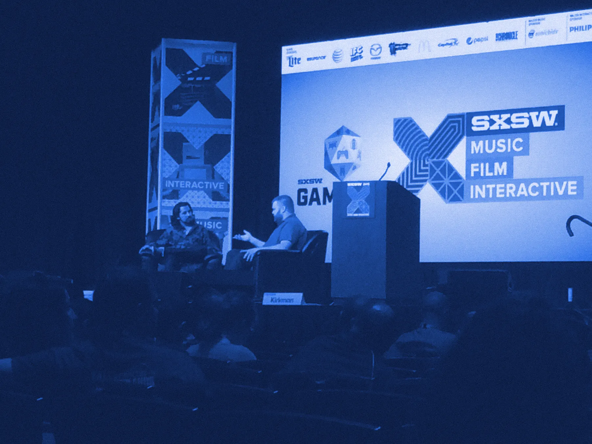

About Pad & Pixel
Consulting and writing, for tech and video games.

Brian Crecente
Brian Crecente founded video gaming site Kotaku and co-founded Polygon. He was also the video games editor for Rolling Stone and for Variety and wrote a weekly gaming column for McClatchy-Tribune News Service for about a decade.
Track record
Audiences he grew.
Kotaku
Traffic from 10,000 a month to 10 million over a seven-year tenure.
Polygon
Helped propel it from a start-up to one of the largest video game sites in the world.
Rolling Stone
Led a team of contractors to push gaming traffic up in its first three months.
Variety
Started a gaming vertical that grew to two million visits a month in one year.
Today
He consults for publishers and the video game industry.
His company currently runs Epic Games Store’s news page, with Crecente sitting as executive editor and helping to lead a team of more than 50 freelancers.
Past and current clients include:
- The Washington Post
- The LEGO Group
- Minute Media
- Niantic
- Tencent
- Otterbox
- Playcrafting
- Survios
- Epic Games
- Rebellion
- Genvid
- Level Infinite
- Loserfruit
- Pragma
- Toadman Interactive
- Bruner House
Before games
More than 15 years at major dailies.
Before becoming a full-time gaming journalist, Crecente was an award-winning newspaper reporter for more than 15 years at major dailies around the country, where he covered everything from wildfires and daily crime to the contested presidential election and serial killers.
He has written about video games since 2000. His award-winning work has appeared in dozens of publications, including:
- The Guardian
- Paste
- The Hollywood Reporter
- Stuff
- Wired
- NPR
- MSNBC
Recognition
Named, seated, and on stage.
One of the 20 most influential people in the video game industry
Over the past 20 years.
One of gaming’s Top 50 journalists
Named by Edge magazine.
Games for Change, SXSW, SUNY Canton
Serves and has served on the board of several groups, including the State University of New York at Canton’s games program.
SXSW, The Smithsonian, UCLA, GDC, Gamescom, PAX
And other venues, plus national TV and radio.
Services
Interested in contracting Crecente?
His services include:
- 01Copy editing
- 02Disaster response training and post-mortem
- 03Editorial training
- 04Ghostwriting and content creation
- 05Public relations
- 06Media training
- 07Mock reviews
- 08Pre- and post-launch game analysis
- 09Research
- 10White papers
- 11Podcasts
- 12On-camera interviews
“Explain what you’re looking for. I’ll get back to you as soon as I’m able.”Brian Crecente